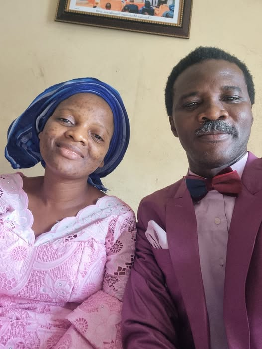

FREE SCHOOLS OPERATION IN THE COUNTRY.

FREE SCHOOLS OPERATION IN THE COUNTRY.
By Latunde Akin.
King Abolarin of orangun Ile-Ila started free schools many years ago till date in his town. He isn't collecting any dime from the students. How he is paying the teachers possibly from his other personal business.
Brother Gbile Akanni, refused to be called Pastor, Reverend, Apostle, Evangelist,but he is very much effective than to be called those titles. He started free schools without collecting any dime from the students. Only whatever any parents or anyone can donate freely to support,never compulsory or mandatory. The free schools still runs their administration basically from free (not forced) donations and other sources. They don't depend on school fees from any student.
Federal government operates some free unity schools,yes we know they use people's tax to do that freely. At least to show free school is possible.
There are other individuals around who also operates free schools which I may not list here.
To tell you,operating free school is highly possible in this society by good spirited people who are privileged to operate it.
To tell you,the present church should be the living example to champion free schools across and sundry. But we are clearly not leading in this free school aspect.
To tell you, the early missionaries championed free schools,but the glory of all of that is no more. This is what affected the church in USA,UK too. They lost their love for humanity to love for money and building of big projects. Those big cathedrals are empty now due to misplaced priorities.
Ministries who use education to do pure business now hide under giving scholarships to selected people.
Let's say they collected 1M from 1000 students,that is 1 billion they then use 100M to offer 100 students scholarship. They are left with a whooping sum of 900M. After paying salaries and removing other administrative costs,at least 200M or more will remain as profit. See pure business? The church people that donated their widow's mite may never have a taste of that scholarship or that school.
Do we say if all churches school are free,they will still have capacity to admit everyone? Big NO.
Do we say if they don't collect school fees they will survive? Big YES.
They will survive from the same donations from their members which built the school in the first place. Unless the money used to build the school is from individual purse and not from church members donation. Then the school shouldn't be named after church organization or ever be connected to the church. Businesses should stand separate from the gospel.
It is disgusting and disheartening to hear that REVIVAL means church taking over industrial facilities.
It is disgusting to hear that REVIVAL means church taking over the educational sector. And because church schools are doing better than government owned schools,it means REVIVAL. That is ridiculous.
Revival isn't when we make money. Revival isn't when we are more organized. Revival isn't when we increase in endless numbers. Revival isn't even miracles.
Revival is when FAITH, MERCY AND JUSTICE is being uphold by the church. Revival is when the fire of love is burning and people are getting lit up by the love like wildfire.
It is sad that the prosperity gospel has unconsciously crept into the faith based , holiness based,prayer based and Bible based churches as well. Everyone of them now wants to prosper in money and so must do side businesses.
Are side businesses wrong for the church? No they are not. But that's not what Christ desires for his church. The focus of Christ isn't any business. And if we're not careful,this may cause downward trend for the gospel message.
It would have been preferable that the church set up a free school system and decide to run the administration and staff payment from donations by members or well wishers.
It would have been preferable to God that the church rather support individual members and encourage them to start businesses and schools by empowering them.
It would have been preferable to God that the church build businesses away from the confinement of the church and refrain from using church name to do business.
A mission based school that is not free is a pure business.
May God please reset the brain of the church. Amen.